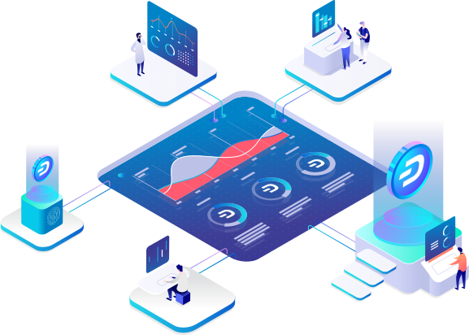

Welcome to the payment infrastructure of the future.
We are building the best payment experience and decentralized cloud infrastructure of the future.
Meet Dash Platform, a new step in development for Dash.

DashPay - Username payments without any hassle
Send funds to your friends using their username, privately. No more addresses or cryptographic knowledge
required.
Easy
Payments with crypto never been easier: just press one button, and funds is already there.
Instantly.
Private
Only two parties exchanging the funds can trace the transaction. No spectators. No traces to
names.
Dash Platform - Deploy your app to a decentralized cloud
Deploy your apps to the decentralized cloud storage. Access it on the web and mobile with an HTTP API.
Developer-centric
Dash platform built with the convenience of the developer in mind. We provide convenient SDKs
and comprehensive documentation.
Fast
Dash Platform provides the same ease of use and speed as established centralized Database as a
Service solutions
Verifiable & Secure
Unlike centralized solutions, all data stored on Dash Platform is always cryptographically
verifiable.
Resilient
The data is distributed across all masternodes in the Dash network, located all over the world.
That makes it hard to take the network down or censor the data.
Learn about other Dash features
And that's on top of the amazing features Dash already has today.
Instant payments confirmed in 1 second.
Scalable and decentralized network.
Self-funded development team.
By default, all Dash transactions are confirmed in about 1 second!